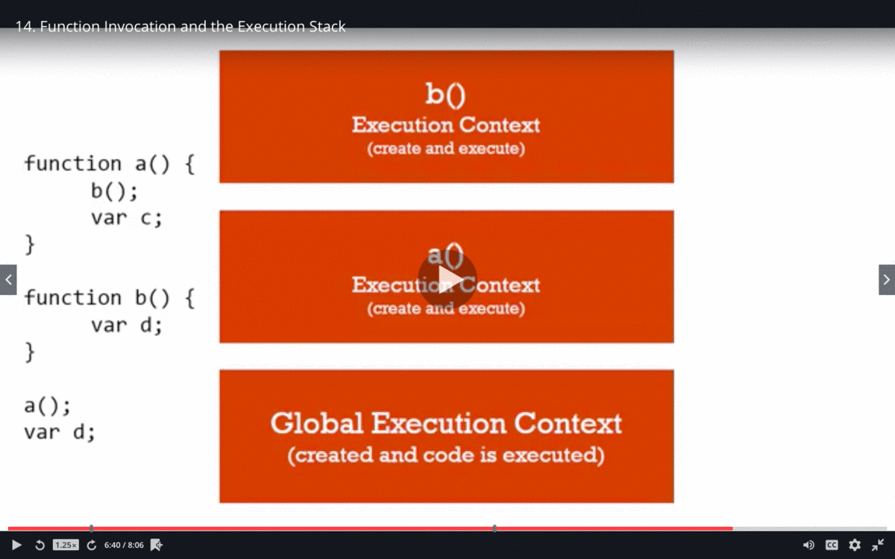
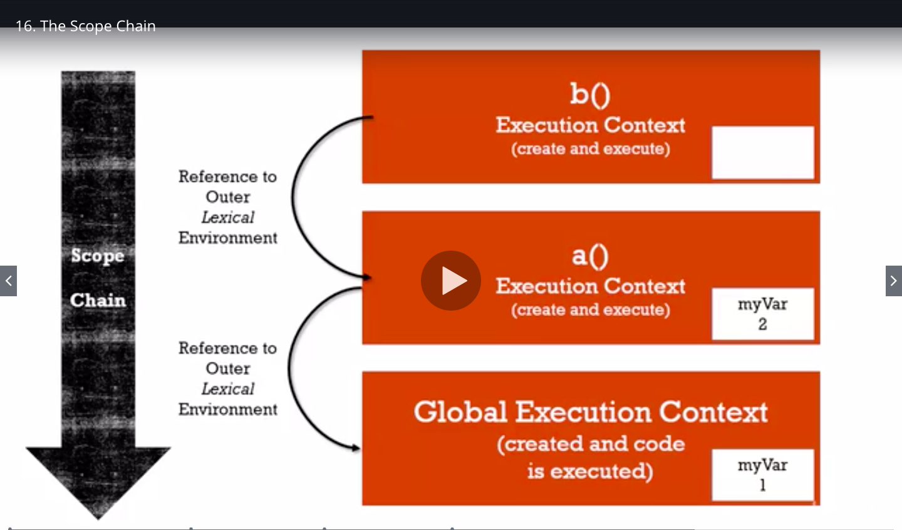

Syntax parser
A program that reads js code and translates it to computer readable language.
Lexical Environment
Where something sits physically in the code you write.
Lexical Environment exists in which where you write something is important.
It basically tells where is it written and what surrounds it.
For example:
var b = "b";
function abc(){
var a = 'a';
}
Here variable b is globally available but variable a is available only inside function
abc
that is lexical scope of variable b
Execution context
A wrapper to help manage the code that is running.
There are lot of lexical environments but which one is running currently is managed by Execution
code.
It not only contains our code but it also contains things written by syntax parser to run code.
Objects
Collection of name value pairs
let address = {
street : 'Main',
apartment : {
floor : 2,
number : 100
}
};
Here address, street, apartment, floor and number are all name and respective to right their values.
Value can itself be another object.
Execution context - GLOBAL
Javascript engine creates Global Object and variable this (setup in memory) whenever our code
runs because code
in wrapped inside execution context
Hoisting
Javascript engine moves functions and variables to the top of the code
E.g.
b();
console.log(a);
var a = "a val";
function b(){
console.log('b function called');
}
//output
-> b function called
-> undefined
here a and b both are called before they are declared. but still there is no error in console because
they are moved to the top
There are two phases which happen during execution;
-
1. Creation phases
-
2. Execution phase
- 1. During creation phase -> global object is setup within memory.
- 2. Parser recognizes where we have created variables and functions.
- 3. Set asides memory space for them
- 4. Function is entirely placed in memory i.e. both function and logic inside it
- 5. Whereas in case of variables it only sets memory space and sets value as undefined as it don't
know what's it value will be until it is executed
i.e. it assigns undefined placeholder for it
All variables in javascript are initially set to undefined and functions are sitting in memory
entirely.
if we use let instead of var then it will throw error instead of showing undefined and will say
------------ Cannot access 'a' before initialization ---------
Single threaded - synchronous execution
Single threaded : One command is executed at a time.
synchronous : one at a time and in order that it appears.
Invocation
Running a function { by using paranthesis() }. So when we say invoke the function we mean to say run the
function.
So whenever we invoke a function a new execution context is created and put on the top of the stack. The
execution context on the top is always executed currently.
When function is executed it gets poped out from the stack.

Scope Chain

Scope Chain